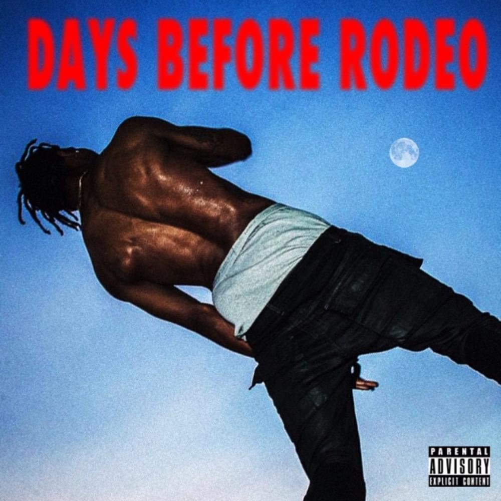
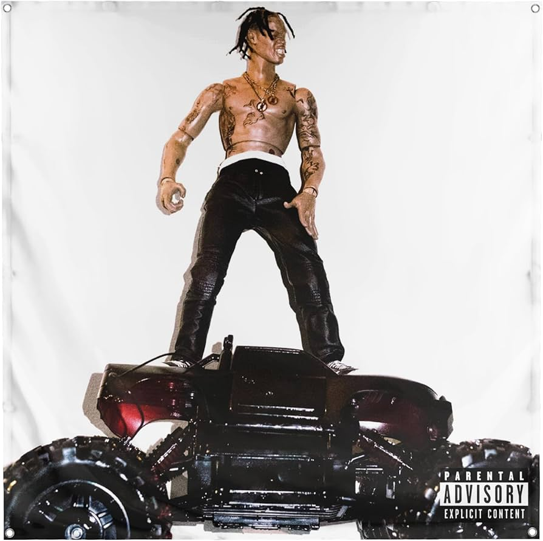
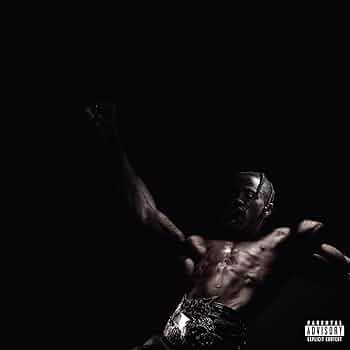

<!DOCTYPE html>
<html lang="fr">

</html>

<head>
    <meta charset="UTF-8">
    <title>From Days before Rodeo To Utopia</title>
    <link href="style.css" rel="stylesheet">
</head>

<body>
    <div class="entete">
        <h1>Travis Scott </h1>⚪️
    </div>

    <div class="menu">
        <ul>
            <li><a href="daysbeforerodeo.html">Days before rodeo</a></li>
            <li><a href="rodeo.html">Rodeo</a></li>
            <li><a href="astroworld.html">Astroworld</a></li>
            <li><a href="utopia.html">Utopia</a></li>
        </ul>
    </div>
    <div class="contenu">
        <div class="contenu-principal">
            <p> Il ya des albums/projets qui a nos yeux sont partfait comme par exemple : Igor ;! ;Blonde ;Möbius ;good
                kid, m.A.Ad city ou My Beautiful Dark Twisted Fantasy. Mais l'enchainement de Travis scott sur Days
                before rodeo, Rodeo, Birds In The Trap Sing McKnight, Astroworld et Utopia, c'est vraiment quelque chose
                d'incroyable. Enchainés des masterclasses comme ca l'une aprés les autres c'est quelquechose tout de
                même.</p>
            <p> Travis Scott, de son vrai nom Jacques Webster, est un rappeur et producteur américain qui a émergé sur
                la scène musicale avec son projet Days Before Rodeo en 2014. Cet EP a marqué le début de son style
                unique, mélangeant trap, psychédélisme et influences R&B.

                Son album Rodeo (2015) a consolidé sa réputation, mêlant des collaborations avec des artistes comme
                Drake et Kanye West. Avec des projets suivants comme Birds in the Trap Sing McKnight (2016) et
                Astroworld (2018), il a atteint des sommets commerciaux et critiques, tout en se distinguant par ses
                spectacles grandioses.

                Depuis, Travis a continué à innover, avec des projets comme Utopia et des collaborations avec des
                marques, consolidant son statut dans la culture populaire. Ses thèmes explorent souvent l'aspiration, la
                célébrité et les excès, tout en créant une atmosphère immersive dans sa musique.</p>
            <p>il ya des video qui rentre plus en profondeur dans hsioire et style de musique comme : <a
                    href="https://youtu.be/BsfNXrJVj1I?feature=shared">https://youtu.be/BsfNXrJVj1I?feature=shared</a>
                et <a href="https://youtu.be/YRHaAE0NbGI?feature=shared">https://youtu.be/YRHaAE0NbGI?feature=shared</a>
        </div>

        <div class="ifram">
            <iframe src=width="600" height="450"></iframe>
            <iframe src="https://open.spotify.com/intl-fr/artist/0Y5tJX1MQlPlqiwlOH1tJY" width="600"
                height="450"></iframe>

        </div>
    </div>
    <p><a href="daysbeforerodeo.html">Days before rodeo</p>
    <p><a href="rodeo.html">Rodeo</p>
    <p />
    </div>
    <a href="astroworld.html">Astroworld</p>
        <p><a href="utopia.html">Utopia</p>

        <body>

            </html>